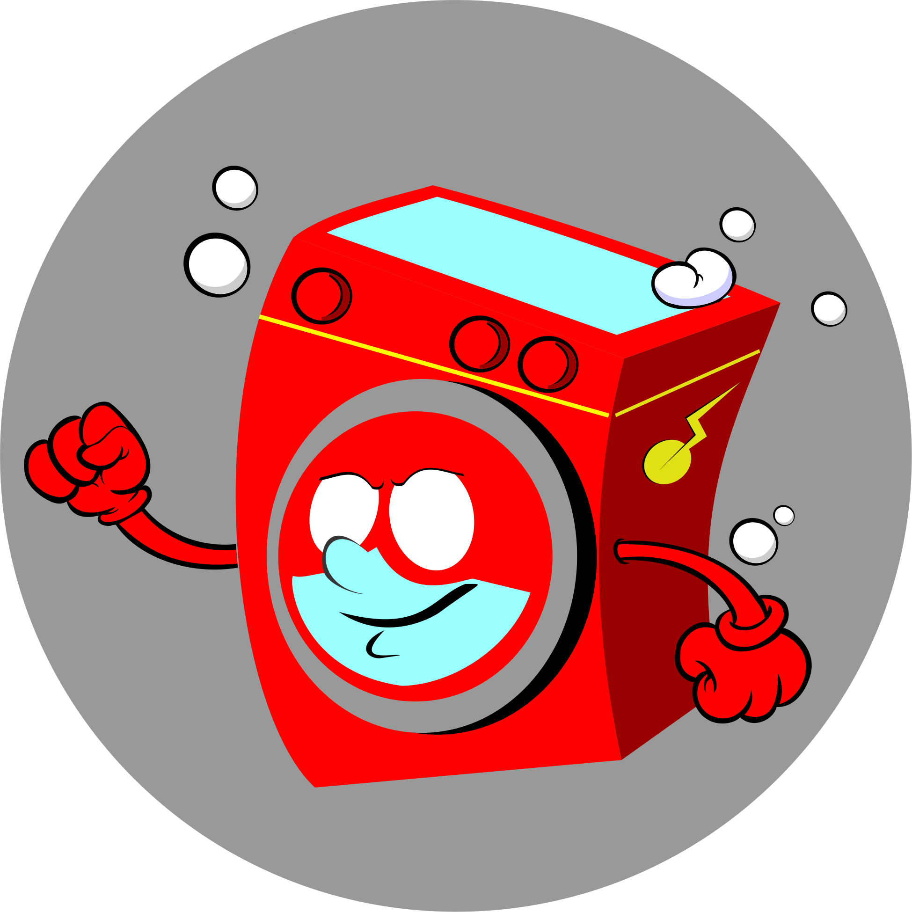

<ion-header>
  
    <ion-toolbar color='primary'>
        <ion-buttons slot="start">
            <ion-back-button defaultHref="/inicio"></ion-back-button>
         </ion-buttons> 
      <ion-title style="color: E3EAE6;">Iniciar sesion</ion-title>
    </ion-toolbar>
  </ion-header>
  
  <ion-content class="centrar">
    
  
  
    <div class="formulario">
       
        <div class="inicio centrar" id="init">
          
          <div>
            <h1>Flash-wash</h1>
            <p>Servicios de lavanderia a la velocidad de luz</p>
          </div>
          
          <div style="width: 100%; height: 20%; " class="centrar">
              <button  (click)="login()">Iniciar secion</button>
              <button  (click)="registrarce()">Registrarce</button>
          </div>
        </div>
  
        <div class="inicio centrar">
       
        <form *ngIf="tipoLogin==1" class="centrar" style="width: 100%;">
            <h2 class="titulo">Inicio de secion</h2>
            <input type="text" placeholder="Nombre ">
            <input type="text" placeholder="Contraseña">
            
            <button (click)=" iniciar()">Aceptar</button>  
            <button (click)="verInicio()">Cancelar</button>   
        </form>
  
       
        <form *ngIf="tipoLogin==0" class="centrar" style="width: 100%;">
            <h2 class="titulo">Registrarce</h2>
            <input type="text" placeholder="Nombre ">
            <input type="text" placeholder="Contraseña">
            <input type="text" placeholder="Confirmar contraseña">
            
            <button (click)=" iniciar()">Aceptar</button> 
            <button (click)="verInicio()">Cancelar</button>    
        </form>
  
      </div>
  
    </div>
   
  
  
  </ion-content>